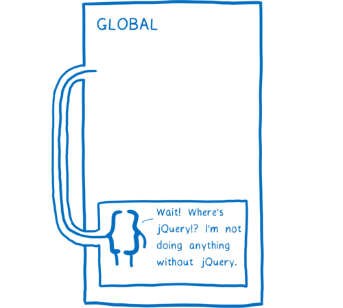
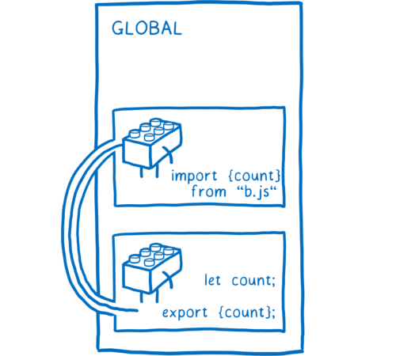
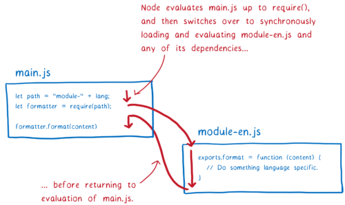
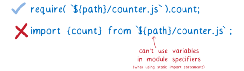
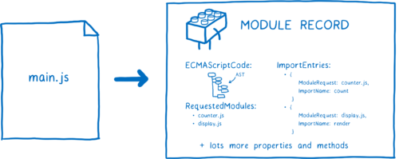
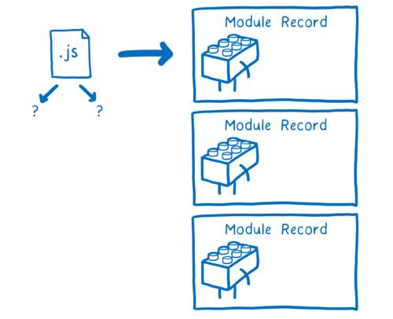
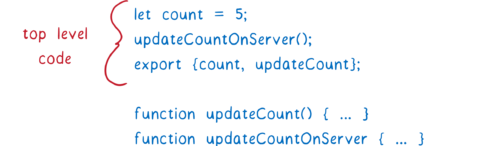
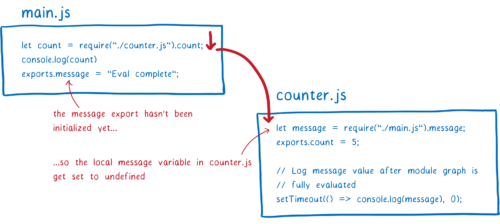

# ES modules: A cartoon deep-dive
ES modules bring an official, standardized module system to JavaScript. It took a while to get here, though — nearly 10 years of standardization work.
But the wait is almost over. With the release of Firefox 60 in May (currently in beta), all major browsers will support ES modules, and the Node modules working group is currently working on adding ES module support to Node.js. And ES module integration for WebAssembly is underway as well.
Many JavaScript developers know that ES modules have been controversial. But few actually understand how ES modules work.
Let’s take a look at what problem ES modules solve and how they are different from modules in other module systems.
# What problem do modules solve?
When you think about it, coding in JavaScript is all about managing variables. It’s all about assigning values to variables, or adding numbers to variables, or combining two variables together and putting them into another variable.
Because so much of your code is just about changing variables, how you organize these variables is going to have a big impact on how well you can code… and how well you can maintain that code.
Having just a few variables to think about at one time makes things easier. JavaScript has a way of helping you do this, called scope. Because of how scopes work in JavaScript, functions can’t access variables that are defined in other functions.
This is good. It means that when you’re working on one function, you can just think about that one function. You don’t have to worry about what other functions might be doing to your variables.
It also has a downside, though. It does make it hard to share variables between different functions.
What if you do want to share your variable outside of a scope? A common way to handle this is to put it on a scope above you… for example, on the global scope.
You probably remember this from the jQuery days. Before you could load any jQuery plug-ins, you had to make sure that jQuery was in the global scope.
This works, but they are some annoying problems that result.
First, all of your script tags need to be in the right order. Then you have to be careful to make sure that no one messes up that order.
If you do mess up that order, then in the middle of running, your app will throw an error. When the function goes looking for jQuery where it expects it — on the global — and doesn’t find it, it will throw an error and stop executing.

This makes maintaining code tricky. It makes removing old code or script tags a game of roulette. You don’t know what might break. The dependencies between these different parts of your code are implicit. Any function can grab anything on the global, so you don’t know which functions depend on which scripts.
A second problem is that because these variables are on the global scope, every part of the code that’s inside of that global scope can change the variable. Malicious code can change that variable on purpose to make your code do something you didn’t mean for it to, or non-malicious code could just accidentally clobber your variable.
# How do modules help?
Modules give you a better way to organize these variables and functions. With modules, you group the variables and functions that make sense to go together.
This puts these functions and variables into a module scope. The module scope can be used to share variables between the functions in the module.
But unlike function scopes, module scopes have a way of making their variables available to other modules as well. They can say explicitly which of the variables, classes, or functions in the module should be available.
When something is made available to other modules, it’s called an export. Once you have an export, other modules can explicitly say that they depend on that variable, class or function.

Because this is an explicit relationship, you can tell which modules will break if you remove another one.
Once you have the ability to export and import variables between modules, it makes it a lot easier to break up your code into small chunks that can work independently of each other. Then you can combine and recombine these chunks, kind of like Lego blocks, to create all different kinds of applications from the same set of modules.
Since modules are so useful, there have been multiple attempts to add module functionality to JavaScript. Today there are two module systems that are actively being used. CommonJS (CJS) is what Node.js has used historically. ESM (EcmaScript modules) is a newer system which has been added to the JavaScript specification. Browsers already support ES modules, and Node is adding support.
Let’s take an in-depth look at how this new module system works.
# How ES modules work
When you’re developing with modules, you build up a graph of dependencies. The connections between different dependencies come from any import statements that you use.
These import statements are how the browser or Node knows exactly what code it needs to load. You give it a file to use as an entry point to the graph. From there it just follows any of the import statements to find the rest of the code.
But files themselves aren’t something that the browser can use. It needs to parse all of these files to turn them into data structures called Module Records. That way, it actually knows what’s going on in the file.
After that, the module record needs to be turned into a module instance. An instance combines two things: the code and state.
The code is basically a set of instructions. It’s like a recipe for how to make something. But by itself, you can’t use the code to do anything. You need raw materials to use with those instructions.
What is state? State gives you those raw materials. State is the actual values of the variables at any point in time. Of course, these variables are just nicknames for the boxes in memory that hold the values.
So the module instance combines the code (the list of instructions) with the state (all the variables’ values).

What we need is a module instance for each module. The process of module loading is going from this entry point file to having a full graph of module instances.
For ES modules, this happens in three steps.
- Construction — find, download, and parse all of the files into module records.
- Instantiation —find boxes in memory to place all of the exported values in (but don’t fill them in with values yet). Then make both exports and imports point to those boxes in memory. This is called linking.
- Evaluation —run the code to fill in the boxes with the variables’ actual values.
People talk about ES modules being asynchronous. You can think about it as asynchronous because the work is split into these three different phases — loading, instantiating, and evaluating — and those phases can be done separately.
This means the spec does introduce a kind of asynchrony that wasn’t there in CommonJS. I’ll explain more later, but in CJS a module and the dependencies below it are loaded, instantiated, and evaluated all at once, without any breaks in between.
However, the steps themselves are not necessarily asynchronous. They can be done in a synchronous way. It depends on what’s doing the loading. That’s because not everything is controlled by the ES module spec. There are actually two halves of the work, which are covered by different specs.
The ES module spec says how you should parse files into module records, and how you should instantiate and evaluate that module. However, it doesn’t say how to get the files in the first place.
It’s the loader that fetches the files. And the loader is specified in a different specification. For browsers, that spec is the HTML spec. But you can have different loaders based on what platform you are using.
The loader also controls exactly how the modules are loaded. It calls the ES module methods — ParseModule, Module.Instantiate, and Module.Evaluate. It’s kind of like a puppeteer controlling the JS engine’s strings.

Now let’s walk through each step in more detail.
# Construction
Three things happen for each module during the Construction phase.
- Figure out where to download the file containing the module from (aka module resolution)
- Fetch the file (by downloading it from a URL or loading it from the file system)
- Parse the file into a module record
# Finding the file and fetching it
The loader will take care of finding the file and downloading it. First it needs to find the entry point file. In HTML, you tell the loader where to find it by using a script tag.
But how does it find the next bunch of modules — the modules that main.js directly depends on?
This is where import statements come in. One part of the import statement is called the module specifier. It tells the loader where it can find each next module.
One thing to note about module specifiers: they sometimes need to be handled differently between browsers and Node. Each host has its own way of interpreting the module specifier strings. To do this, it uses something called a module resolution algorithm, which differs between platforms. Currently, some module specifiers that work in Node won’t work in the browser, but there is ongoing work to fix this.
Until that’s fixed, browsers only accept URLs as module specifiers. They will load the module file from that URL. But that doesn’t happen for the whole graph at the same time. You don’t know what dependencies the module needs you to fetch until you’ve parsed the file… and you can’t parse the file until you fetched it.
This means that we have to go through the tree layer-by-layer, parsing one file, then figuring out its dependencies, and then finding and loading those dependencies.
If the main thread were to wait for each of these files to download, a lot of other tasks would pile up in its queue.
That’s because when you’re working in a browser, the downloading part takes a long time.

Based on this chart.
Blocking the main thread like this would make an app that uses modules too slow to use. This is one of the reasons that the ES module spec splits the algorithm into multiple phases. Splitting out construction into its own phase allows browsers to fetch files and build up their understanding of the module graph before getting down to the synchronous work of instantiating.
This approach—having the algorithm split up into phases—is one of the key differences between ES modules and CommonJS modules.
CommonJS can do things differently because loading files from the filesystem takes much less time than downloading across the Internet. This means Node can block the main thread while it loads the file. And since the file is already loaded, it makes sense to just instantiate and evaluate (which aren’t separate phases in CommonJS). This also means that you’re walking down the whole tree, loading, instantiating, and evaluating any dependencies before you return the module instance.

The CommonJS approach has a few implications, and I will explain more about those later. But one thing that it means is that in Node with CommonJS modules, you can use variables in your module specifier. You are executing all of the code in this module (up to the require statement) before you look for the next module. That means the variable will have a value when you go to do module resolution.
But with ES modules, you’re building up this whole module graph beforehand… before you do any evaluation. This means you can’t have variables in your module specifiers, because those variables don’t have values yet.

But sometimes it is really useful to use variables for module paths. For example, you might want to switch which module you load depending on what the code is doing or what environment it is running in.
To make this possible for ES modules, there’s a proposal called dynamic import. With it, you can use an import statement like import(`${path}/foo.js`).
The way this works is that any file loaded using import() is handled as the entry point to a separate graph. The dynamically imported module starts a new graph, which is processed separately.
One thing to note, though — any module that is in both of these graphs is going to share a module instance. This is because the loader caches module instances. For each module in a particular global scope, there will only be one module instance.
This means less work for the engine. For example, it means that the module file will only be fetched once even if multiple modules depend on it. (That’s one reason to cache modules. We’ll see another in the evaluation section.)
The loader manages this cache using something called a module map. Each global keeps track of its modules in a separate module map.
When the loader goes to fetch a URL, it puts that URL in the module map and makes a note that it’s currently fetching the file. Then it will send out the request and move on to start fetching the next file.
What happens if another module depends on the same file? The loader will look up each URL in the module map. If it sees fetching in there, it will just move on to the next URL.
But the module map doesn’t just keep track of what files are being fetched. The module map also serves as a cache for the modules, as we’ll see next.
# Parsing
Now that we have fetched this file, we need to parse it into a module record. This helps the browser understand what the different parts of the module are.

Once the module record is created, it is placed in the module map. This means that whenever it’s requested from here on out, the loader can pull it from that map.
There is one detail in parsing that may seem trivial, but that actually has pretty big implications. All modules are parsed as if they had "use strict" at the top. There are also other slight differences. For example, the keyword await is reserved in a module’s top-level code, and the value of this is undefined.
This different way of parsing is called a “parse goal”. If you parse the same file but use different goals, you’ll end up with different results. So you want to know before you start parsing what kind of file you’re parsing — whether it’s a module or not.
In browsers this is pretty easy. You just put type="module" on the script tag. This tells the browser that this file should be parsed as a module. And since only modules can be imported, the browser knows that any imports are modules, too.
But in Node, you don’t use HTML tags, so you don’t have the option of using a type attribute. One way the community has tried to solve this is by using an .mjs extension. Using that extension tells Node, “this file is a module”. You’ll see people talking about this as the signal for the parse goal. The discussion is currently ongoing, so it’s unclear what signal the Node community will decide to use in the end.
Either way, the loader will determine whether to parse the file as a module or not. If it is a module and there are imports, it will then start the process over again until all of the files are fetched and parsed.
And we’re done! At the end of the loading process, you’ve gone from having just an entry point file to having a bunch of module records.

The next step is to instantiate this module and link all of the instances together.
# Instantiation
Like I mentioned before, an instance combines code with state. That state lives in memory, so the instantiation step is all about wiring things up to memory.
First, the JS engine creates a module environment record. This manages the variables for the module record. Then it finds boxes in memory for all of the exports. The module environment record will keep track of which box in memory is associated with each export.
These boxes in memory won’t get their values yet. It’s only after evaluation that their actual values will be filled in. There is one caveat to this rule: any exported function declarations are initialized during this phase. This makes things easier for evaluation.
To instantiate the module graph, the engine will do what’s called a depth first post-order traversal. This means it will go down to the bottom of the graph — to the dependencies at the bottom that don’t depend on anything else — and set up their exports.
The engine finishes wiring up all of the exports below a module — all of the exports that the module depends on. Then it comes back up a level to wire up the imports from that module.
Note that both the export and the import point to the same location in memory. Wiring up the exports first guarantees that all of the imports can be connected to matching exports.
This is different from CommonJS modules. In CommonJS, the entire export object is copied on export. This means that any values (like numbers) that are exported are copies.
This means that if the exporting module changes that value later, the importing module doesn’t see that change.
In contrast, ES modules use something called live bindings. Both modules point to the same location in memory. This means that when the exporting module changes a value, that change will show up in the importing module.
Modules that export values can change those values at any time, but importing modules cannot change the values of their imports. That being said, if a module imports an object, it can change property values that are on that object.
The reason to have live bindings like this is then you can wire up all of the modules without running any code. This helps with evaluation when you have cyclic dependencies, as I’ll explain below.
So at the end of this step, we have all of the instances and the memory locations for the exported/imported variables wired up.
Now we can start evaluating the code and filling in those memory locations with their values.
# Evaluation
The final step is filling in these boxes in memory. The JS engine does this by executing the top-level code — the code that is outside of functions.
Besides just filling in these boxes in memory, evaluating the code can also trigger side effects. For example, a module might make a call to a server.

Because of the potential for side effects, you only want to evaluate the module once. As opposed to the linking that happens in instantiation, which can be done multiple times with exactly the same result, evaluation can have different results depending on how many times you do it.
This is one reason to have the module map. The module map caches the module by canonical URL so that there is only one module record for each module. That ensures each module is only executed once. Just as with instantiation, this is done as a depth first post-order traversal.
What about those cycles that we talked about before?
In a cyclic dependency, you end up having a loop in the graph. Usually, this is a long loop. But to explain the problem, I’m going to use a contrived example with a short loop.

Let’s look at how this would work with CommonJS modules. First, the main module would execute up to the require statement. Then it would go to load the counter module.
The counter module would then try to access message from the export object. But since this hasn’t been evaluated in the main module yet, this will return undefined. The JS engine will allocate space in memory for the local variable and set the value to undefined.
Evaluation continues down to the end of the counter module’s top level code. We want to see whether we’ll get the correct value for message eventually (after main.js is evaluated), so we set up a timeout. Then evaluation resumes on main.js.
The message variable will be initialized and added to memory. But since there’s no connection between the two, it will stay undefined in the required module.
If the export were handled using live bindings, the counter module would see the correct value eventually. By the time the timeout runs, main.js’s evaluation would have completed and filled in the value.
Supporting these cycles is a big rationale behind the design of ES modules. It’s this three-phase design that makes them possible.
# What’s the status of ES modules?
With the release of Firefox 60 in early May, all major browsers will support ES modules by default. Node is also adding support, with a working group dedicated to figuring out compatibility issues between CommonJS and ES modules.
This means that you’ll be able to use the script tag with type=module, and use imports and exports. However, more module features are yet to come. The dynamic import proposal is at Stage 3 in the specification process, as is import.meta which will help support Node.js use cases, and the module resolution proposal will also help smooth over differences between browsers and Node.js. So you can expect working with modules to get even better in the future.
# Acknowledgements
Thank you to everyone who gave feedback on this post, or whose writing or discussions informed it, including Axel Rauschmayer, Bradley Farias, Dave Herman, Domenic Denicola, Havi Hoffman, Jason Weathersby, JF Bastien, Jon Coppeard, Luke Wagner, Myles Borins, Till Schneidereit, Tobias Koppers, and Yehuda Katz, as well as the members of the WebAssembly community group, the Node modules working group, and TC39.
# About Lin Clark
Lin works in Advanced Development at Mozilla, with a focus on Rust and WebAssembly.
- https://twitter.com/linclark
- @linclark
More articles by Lin Clark…
文章来源：https://hacks.mozilla.org/2018/03/es-modules-a-cartoon-deep-dive/